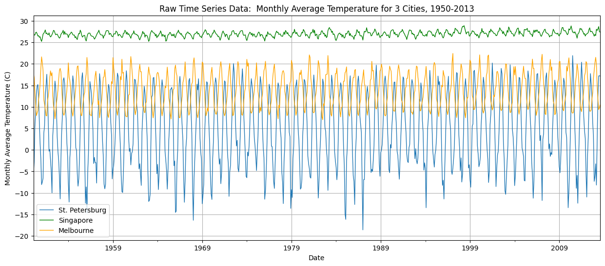
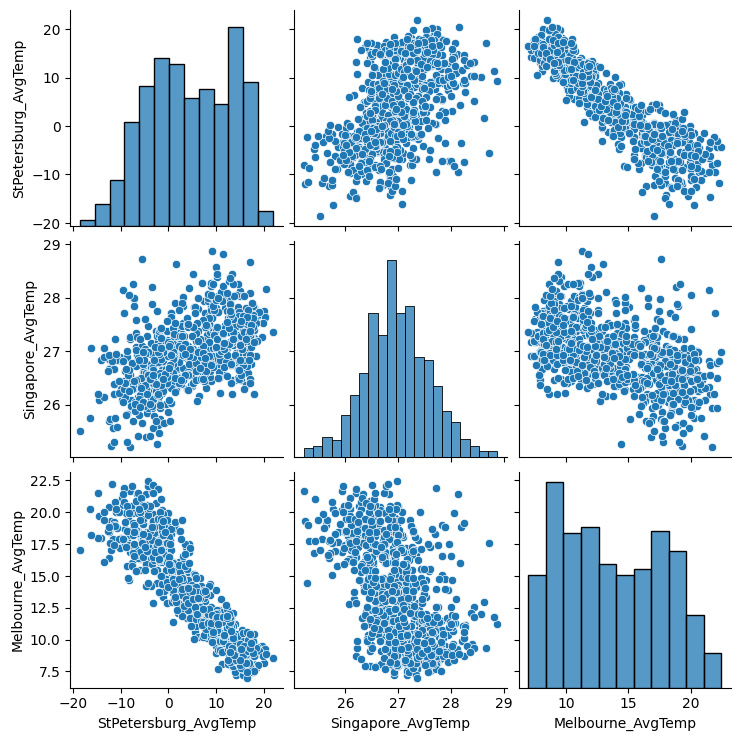
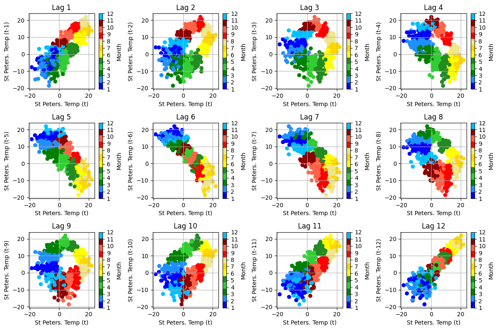
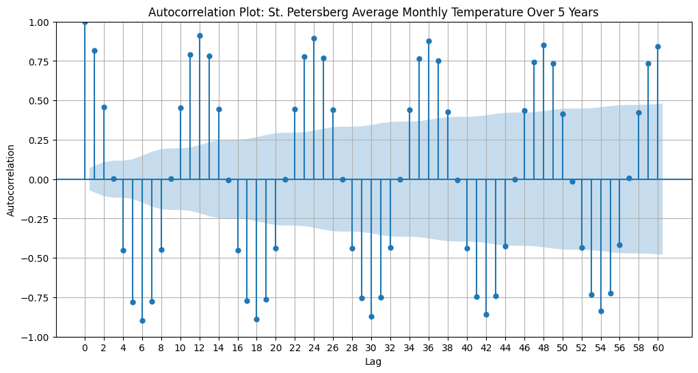

# Import packagesimport numpy as npimport pandas as pdimport matplotlib.pyplot as pltfrom matplotlib.colors import ListedColormapimport seaborn as snsfrom statsmodels.tsa.stattools import acffrom statsmodels.graphics.tsaplots import plot_acf# Read in raw datadata = pd.read_csv('GlobalLandTemperaturesByMajorCity.csv')# Select 3 cities to analyze, and rearrange the dataframe so each city is its own columndataStPetersburg = data[data['City'] =='Saint Petersburg']dataSingapore = data[data['City'] =='Singapore']dataMelbourne = data[data['City'] =='Melbourne']data = pd.merge(dataStPetersburg, dataSingapore, on='dt', how='inner') #combine St. Petersburg & Singapore datadata = pd.merge(data, dataMelbourne, on='dt', how='inner') #add Melbourne datadata.rename(columns={'AverageTemperature_x': 'StPetersburg_AvgTemp', 'AverageTemperature_y': 'Singapore_AvgTemp', 'AverageTemperature': 'Melbourne_AvgTemp'}, inplace=True)data = data[['dt', 'StPetersburg_AvgTemp', 'Singapore_AvgTemp', 'Melbourne_AvgTemp']] #get rid of unneeded columns# Set datetime index and filter out values before 1950 (otherwise there's too much data to visualize)data['dt'] = pd.to_datetime(data['dt'])data.set_index('dt', inplace=True)data = data[data.index >'1950']data = data.dropna()# Look at the modified datadata
StPetersburg_AvgTemp
Singapore_AvgTemp
Melbourne_AvgTemp
dt
1950-02-01
-5.829
26.368
17.980
1950-03-01
-2.812
26.775
16.769
1950-04-01
5.366
26.691
13.641
1950-05-01
8.655
27.268
10.472
1950-06-01
13.055
27.367
7.962
...
...
...
...
2013-04-01
2.167
27.767
14.762
2013-05-01
12.355
28.083
11.836
2013-06-01
17.185
28.662
9.365
2013-07-01
17.234
27.487
9.774
2013-08-01
17.153
27.372
10.441
763 rows × 3 columns
1. Time series plots
Plot the raw time series data
Identify any time series patterns
Identify any interesting trends insight
plt.figure(figsize=(15, 6))data['StPetersburg_AvgTemp'].plot(linewidth=1, label='St. Petersburg')data['Singapore_AvgTemp'].plot(linewidth=1, label='Singapore', color='green')data['Melbourne_AvgTemp'].plot(linewidth=1, label='Melbourne', color='orange')plt.xlabel('Date')plt.ylabel('Monthly Average Temperature (C)')plt.title('Raw Time Series Data: Monthly Average Temperature for 3 Cities, 1950-2013')plt.legend()plt.yticks(np.arange(-20, 35, 5))plt.grid(True)plt.show()

All 3 city temperatures show strong seasonality, with colder temperatures in the winter and hotter temperatures in the summer. St. Petersburg, Russia, experiences both the coldest temperatures and the greatest seasonal changes as a consequence of its high northern latitude. Singapore, which is close to the equator, experiences both the warmest temperatures and the smallest variation. Melbourne, Australia, is located at middling latitude in the Southern Hemisphere, and so experiences moderate average temperature and variation, but with summer and winter opposite to the Northern Hemisphere cities.
Because of climate change, all 3 city temperatures show a subtle upward trend starting around 1985.
2. Scatterplots
Plot a 3x3 grid of all pairwise scatterplots
Identify any interesting trends insight
sns.pairplot(data)

The St. Petersburg and Singapore average monthly temperatures are positively correlated, because both cities are in the Northern Hemisphere, meaning they experience the same season at the same time. However, all other temperature pairs are negatively correlated because Melbourne is in the Southern Hemisphere, meaning that it is always experencing the oppsite season as the other cities.
The plots involving Singapore’s monthly temperatures appear to show a weaker correlation than the ones with only St. Petersburg and Melbourne temperatures. This may be because Singapore experiences much less seasonal variation than the other cities.
3. Lag & autocorrelation plots
Plot a lag plot of any variable of your choice to visualize its relationship to itself in the past. Use a maximum \(k\) value of your choice
Plot an autocorrelation plot of this same variable to quantify its relationship to itself in the past. Use a maximum \(k\) value of your choice
# Lag plots of St. Petersberg average monthly temperature# Code mostly written by ChatGPT# Define the maximum lag value (k)max_k =12# Create a colormap for monthscmap = ListedColormap(['blue', 'dodgerblue', 'green', 'limegreen', 'forestgreen', 'yellow', 'gold', 'khaki', 'red', 'tomato', 'darkred', 'deepskyblue'])# Create separate scatterplots for each lag valueplt.figure(figsize=(12, 8))for lag inrange(1, max_k +1): plt.subplot(3, 4, lag) # Create a 3x4 grid of subplots lagged_col = data['StPetersburg_AvgTemp'].shift(lag) months = data.index.month # Extract the month from the index scatter = plt.scatter(data['StPetersburg_AvgTemp'], lagged_col, c=months, cmap=cmap) plt.title(f'Lag {lag}') plt.xlabel('St Peters. Temp (t)') plt.ylabel(f'St Peters. Temp (t-{lag})') plt.colorbar(scatter, ticks=np.arange(1, 13), label='Month') plt.grid(True)plt.tight_layout()plt.show()

Above are lag plots for St. Petersburg average monthly temperature, with lags ranging from 1 (a month) to 12 (a year). Lag 12, in which a month’s average temperature is plotted against itself, shows the strongest positive correlation. The strongest negative correlation appears at Lag 6, in which a month is plotted against its seasonal opposite. The plots at Lag 3 and Lag 9 show the weakest correlation, when a month is plotted against one with a middling temperature difference. The ‘donut’ shape is caused by St. Petersburg’s extreme seasonal temperature variation.
# Autocorrelation plot of St. Petersberg average monthly temperature# Define the maximum lag value (k)max_k =60# Create the autocorrelation plot (ACF)plt.figure(figsize=(12, 6))plot_acf(data['StPetersburg_AvgTemp'], lags=max_k, ax=plt.gca())plt.title(f'Autocorrelation Plot: St. Petersberg Average Monthly Temperature Over 5 Years')plt.xlabel('Lag')plt.ylabel('Autocorrelation')plt.grid(True)plt.xticks(np.arange(0, 62, 2))plt.show()

The autocorrelation plot of St. Petersburg’s average monthly temperature shows strong seasonality. A month experiences the most positive autocorrelation at Lag 0, 12, 24, etc., when the same month appears. The most negative autocorrelation occurs at Lag 6, 18, 30, ect., with the month’s seasonal opposite. Autocorrelation is positive closer to the month itself and negative closer to its seasonal opposite, since average temperature changes continuously.
We can also observe over this plot of 5 years that the strength of autocorrelation always decays with increasing Lag.
Appendix: Choosing cities
# Look at the raw dataoriginaldata = pd.read_csv('GlobalLandTemperaturesByMajorCity.csv')originaldata
dt
AverageTemperature
AverageTemperatureUncertainty
City
Country
Latitude
Longitude
0
1849-01-01
26.704
1.435
Abidjan
Côte D'Ivoire
5.63N
3.23W
1
1849-02-01
27.434
1.362
Abidjan
Côte D'Ivoire
5.63N
3.23W
2
1849-03-01
28.101
1.612
Abidjan
Côte D'Ivoire
5.63N
3.23W
3
1849-04-01
26.140
1.387
Abidjan
Côte D'Ivoire
5.63N
3.23W
4
1849-05-01
25.427
1.200
Abidjan
Côte D'Ivoire
5.63N
3.23W
...
...
...
...
...
...
...
...
239172
2013-05-01
18.979
0.807
Xian
China
34.56N
108.97E
239173
2013-06-01
23.522
0.647
Xian
China
34.56N
108.97E
239174
2013-07-01
25.251
1.042
Xian
China
34.56N
108.97E
239175
2013-08-01
24.528
0.840
Xian
China
34.56N
108.97E
239176
2013-09-01
NaN
NaN
Xian
China
34.56N
108.97E
239177 rows × 7 columns
# Filter dates and look at what cities have the most data for this timeframeoriginaldata.set_index('dt', inplace=True)originaldata = originaldata[originaldata.index >'1960']originaldata['City'].mode()
0 Abidjan
1 Addis Abeba
2 Ahmadabad
3 Aleppo
4 Alexandria
...
95 Tokyo
96 Toronto
97 Umm Durman
98 Wuhan
99 Xian
Name: City, Length: 100, dtype: object
Find some cities at diverse latitiudes to analyze:
# Convert Latitude to a numberdef convert_latitude(lat_str):""" Written by ChatGPT """ lat_value =float(lat_str.rstrip('NS'))if'S'in lat_str: lat_value *=-1# Convert to a negative value for southern latitudesreturn lat_valueoriginaldata['Latitude'] = originaldata['Latitude'].apply(convert_latitude)
/var/folders/qc/qz8fv61s4xs8w475xp4n7d840000gn/T/ipykernel_54075/3019456029.py:10: SettingWithCopyWarning:
A value is trying to be set on a copy of a slice from a DataFrame.
Try using .loc[row_indexer,col_indexer] = value instead
See the caveats in the documentation: https://pandas.pydata.org/pandas-docs/stable/user_guide/indexing.html#returning-a-view-versus-a-copy
originaldata['Latitude'] = originaldata['Latitude'].apply(convert_latitude)
# Find a northernmost citytest = originaldata[originaldata['Latitude'] >60]test['City'].mode()